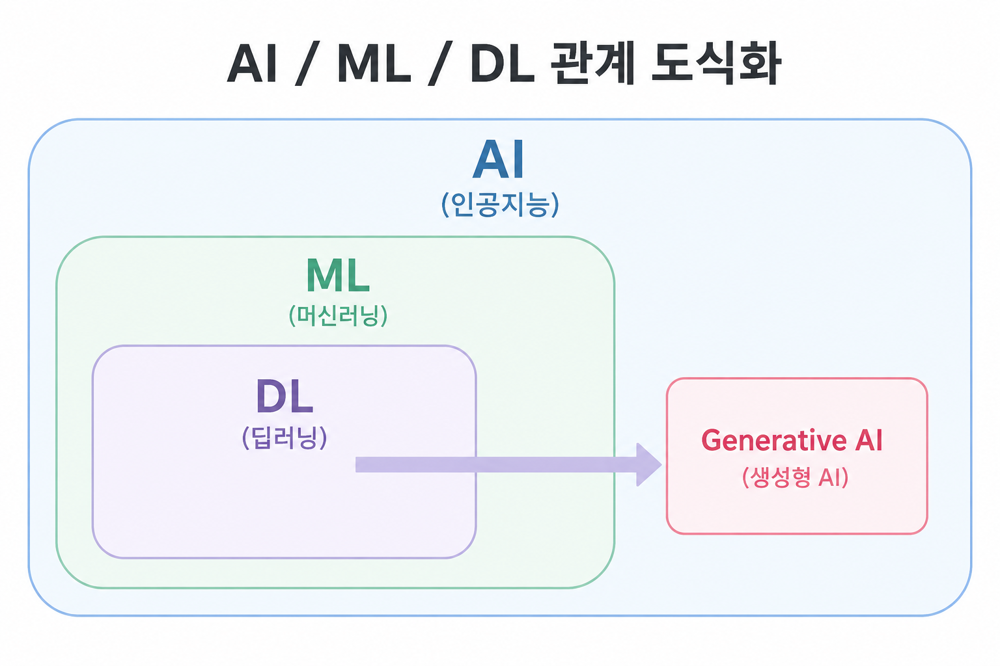
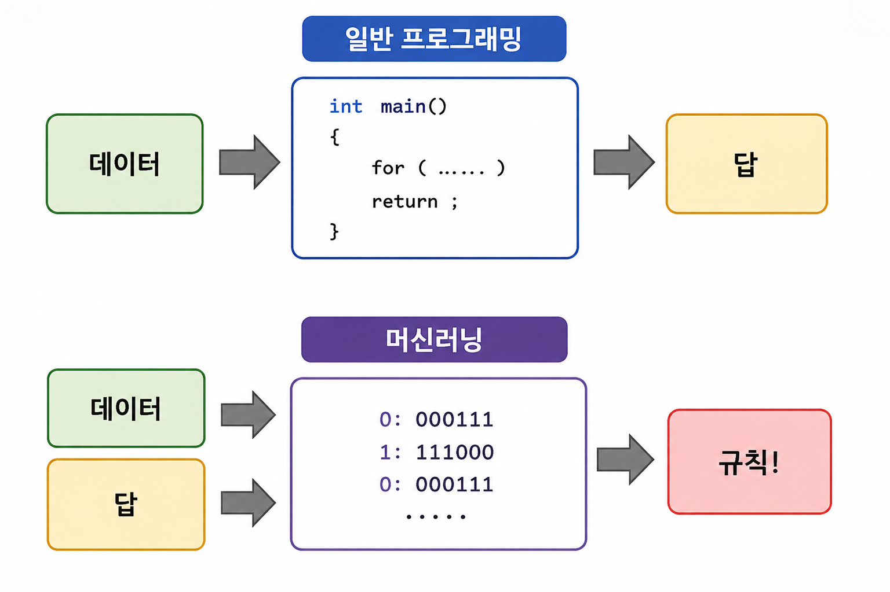
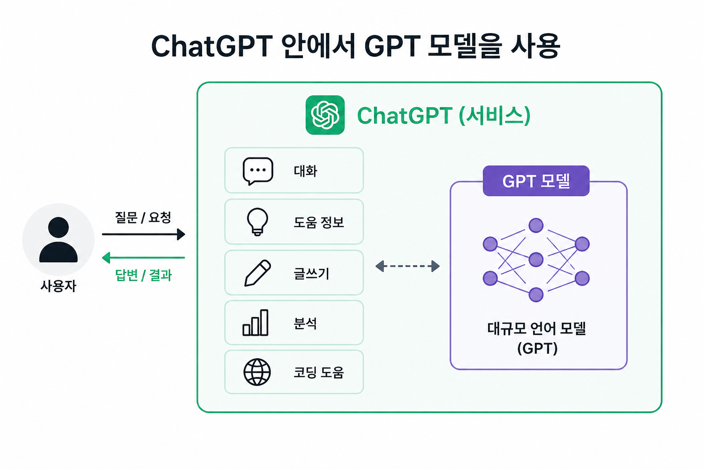

AI란 무엇인가 (AI - ML - DL - 생성형 AI 관계도)
AI, ML, DL, 생성형 AI는 서로 다른 기술이 아니라 큰 원 안에 작은 원이 들어있는 포함 관계입니다.
개념 설명
AI(인공지능)는 사람처럼 똑똑하게 행동하는 모든 기술을 뜻하는 가장 큰 개념입니다.
그 안의 ML(머신러닝)은 사람이 규칙을 정해주지 않아도 데이터를 보고 스스로 규칙을 찾는 방식이고,
그 안의 DL(딥러닝)은 사람 뇌 신경망 구조를 흉내 낸 방식이며,
가장 안쪽의 생성형 AI는 딥러닝 기술로 새로운 것을 만들어내는 AI(ChatGPT, Claude 등)입니다.

AI(인공지능) ⊃ ML(머신러닝) ⊃ DL(딥러닝) 의 포함 관계이며, 생성형 AI(Generative AI)는 딥러닝 기술을 기반으로 등장한 갈래입니다.
규칙 기반
소금 1스푼, 간장 2스푼을 넣어라”처럼 정해진 방법대로 조리합니다.
머신러닝 (ML)
맛있었던 음식 데이터를 분석해 재료와 맛의 관계를 경험(학습)하여 맛있는 음식이 되는 요리법을 찾습니다.
생성형 AI
"매운맛 + 한식 + 간단한 요리"라고 하면 새로운 레시피를 만들어서 제공합니다.

일반 프로그래밍은 데이터 + 규칙(코드) → 답이고, 머신러닝은 데이터 + 답 → 규칙입니다. 즉 사람이 규칙을 짜는 대신, 기계가 데이터에서 규칙을 스스로 찾아냅니다.
연습문제
"매뉴얼에 정해진 대로만 응대하는 콜센터 직원"은 아래 중 어떤 방식에 가장 가까운가요?
- 머신러닝 방식
- 딥러닝 방식
- 규칙 기반 방식
- 생성형 AI 방식
"머신러닝과 생성형 AI의 차이가 무엇인가요?"라는 질문을 받았다고 가정하고, 빈칸을 채워 한 문장으로 답변을 완성해보세요.
「머신러닝은 주어진 데이터를 보고 ( )을 하는 것에 가깝고, 생성형 AI는 한 걸음 더 나아가 ( )을 만들어내는 것입니다.」
AI 발전사 (규칙 기반 → 머신러닝 → 딥러닝 → LLM/생성형 AI)
각 시대의 한계를 극복하며 다음 단계로 넘어온 흐름을 살펴봅니다.
개념 설명
AI는 어느 날 갑자기 지금 수준이 된 것이 아니라, 여러 단계를 거치며 발전해왔습니다.
각 시대는 이전 시대의 한계를 극복하면서 다음 단계로 넘어갔습니다.
쉽게 이해하는 예제 · 번역기의 발전 과정
같은 문장 "밥 먹었어?"를 시대별 번역기가 어떻게 처리했는지 비교해봅니다.
단어 하나씩 바꿔치기
"밥"=rice, "먹었어"=ate → "Rice ate?" 사전 단어를 그대로 치환해서 어색하고 부자연스럽습니다.
통계적으로 더 자연스럽게
수많은 번역 예문을 통계적으로 분석해 "Did you eat?"에 가까운 번역이 나오지만, 여전히 문맥은 자주 놓칩니다.
문장 전체 흐름을 이해
문장 전체를 신경망으로 학습해 "Have you eaten?" 처럼 훨씬 자연스러운 번역이 가능해집니다.
맥락과 뉘앙스까지 이해
친한 사이의 걱정하는 말투까지 파악해 "Have you eaten yet? I was worried about you." 처럼 상황에 맞는 표현을 만듭니다.
연습문제
다음 설명에 해당하는 시대를 순서대로 나열하세요.
A. 데이터를 많이 보여주면 스스로 패턴을 찾기 시작한 시대 B. 사람이 모든 규칙을 일일이 정해준 시대
C. 대화하듯 자연스럽게 결과를 만들어내는 시대 D. 사람 뇌 구조를 흉내 내어 스스로 특징까지 찾아내는 시대
"번역기가 단어를 하나씩 바꿔치기만 하던 시대"는 어떤 방식에 해당하나요?
회사에서 "간단한 사내 FAQ 자동 응답 시스템"을 만들어야 합니다. 질문과 답변이 20개 정도로 정해져 있고 거의 바뀌지 않는다면, 규칙 기반/머신러닝/딥러닝/LLM 중 어떤 방식이 가장 합리적일지 이유와 함께 이야기해보세요.
최신 기술 트렌드 (LLM · 멀티모달 · 에이전트 AI · sLLM)
요즘 뉴스에 자주 나오는 네 가지 키워드를 일상 비유로 이해합니다.
LLM (거대 언어 모델)
엄청나게 많은 글을 읽고 학습해서, 사람처럼 자연스럽게 글을 이해하고 쓰는 AI입니다.
멀티모달 AI
글뿐만 아니라 사진, 소리, 영상까지 함께 이해하고 만들어내는 AI입니다.
에이전트 AI
스스로 계획을 세우고, 필요한 도구를 직접 사용해서 일을 끝까지 처리하는 AI입니다.
sLLM / 온디바이스 AI
크기를 줄여서 인터넷 없이 내 스마트폰이나 노트북에서 바로 실행되는 AI입니다.

GPT가 AI모델명이고, Chat-GPT는 AI모델을 사용할 수 있도록 제공하는 어플리케이션입니다.
연습문제
"글뿐만 아니라 사진, 소리, 영상까지 함께 이해하고 만들어낼 수 있는 AI"에 해당하는 트렌드 용어를 쓰세요.
"지시만 하면 알아서 항공권 검색부터 예약까지 끝까지 처리해주는 AI"는 아래 중 어떤 트렌드에 가장 가까운가요?
- LLM
- 멀티모달 AI
- 에이전트 AI
- sLLM / 온디바이스 AI
"sLLM(온디바이스 AI)이 왜 필요한가요? 이미 성능 좋은 LLM이 있는데 말이죠." 라는 질문을 받았다면 어떻게 답하시겠습니까?